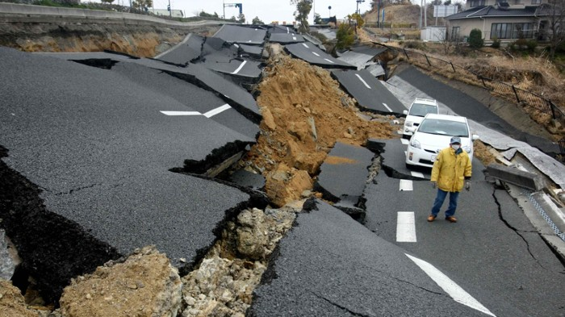

An earthquake is when 2 areas of land quickly slip across eachother, causing devastating damage.
These mostly happen around fault lines, which are in mostly every single contenent.
After a severe earthquake, it takes a long time for the affected area to clean up and rebuild roads, buildings, etc.
Firstly, we have been using design strategies to make sure our buildings do not topple.
But when disaster strikes, use the instuctions below, and they might save you and your family.